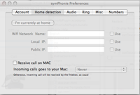
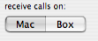
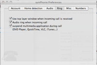
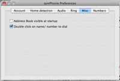

Configuration of symPhonie
Open symPhonie preference to configure symPhonie
Account Configuration |
|
 |
symPhonie is intended to be simple to use and to configure : enter your user name or number, your password, and you're done. NOTE : symPhonie is currently limited to Free french provider. |
Sound system preferences Configuration |
|
 |
Make sure that in System preferences, the noise reduction is enabled on microphone. |
Home detection Configuration |
|
|  |
Home detection is a future feature. It is not yet available. symPhonie will be able
to detect if you are at home, and automatically change configuration according this information. In current version, the only setting is "Receive call on Mac". This is the default, start up, value of incoming call redirection setting, which can be changed in main window  |
Audio Configuration |
|
 |
symPhonie can change audio level when making or receiving a call The "additional gain for microphone" will add some amplification on voice, before transmitting to your callee. This is generaly needed, when using builtin microphone The output and input device selection allows usage of external audio devices |
Ring Configuration |
|
|  |
Ring configuration enables several alerts scheme when an incoming call is received : symPhonie can popup a transparent window, and play a midi ring tone. Additionally, symPhonie can pause iTunes and other application when a call is received note: in current version, is not possible to change the ring tone note: the "suspend multimedia applications" option is also used when dialing an outgoing call |
Misc Configuration |
|
|  |
The "Address Book visible at startup" item toggles default visibility of Address Book subwindow, when beiing in "offline" state. Check "double click on name.." item if you want quick dial, without confirmation, by double clicking on a phone number in the Address Book subwindow |